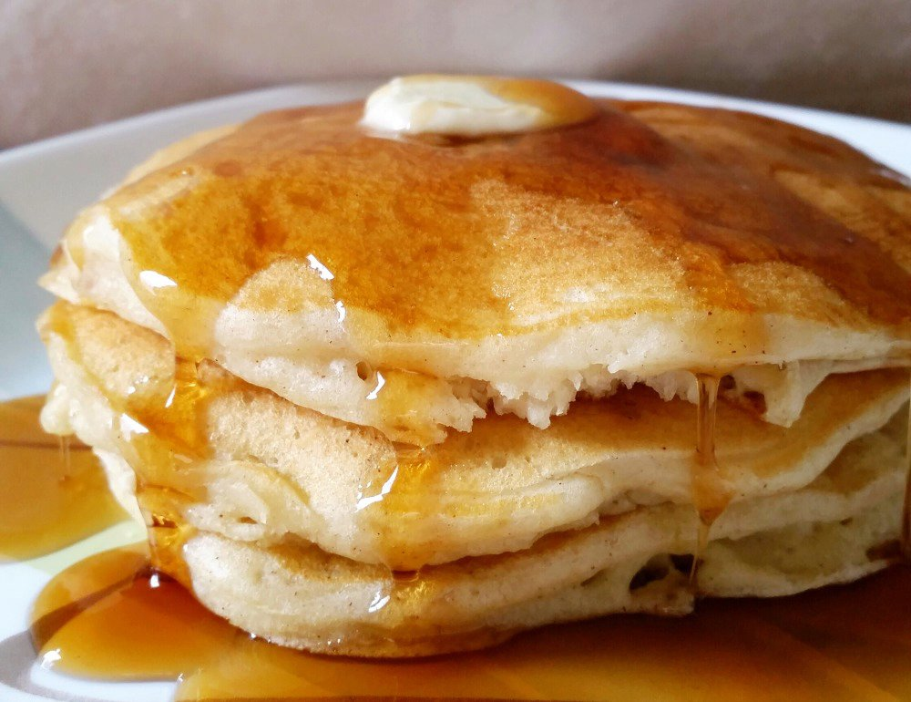

Cinnamon Vanilla Pancakes

Description
Yields: 2-3 servings
Prep time: 10-15 minutes
Cook time: 5 minutes
These pancakes are a great way to start your morning - sweet but sugar-free, and beginner-friendly! Note that this recipe assumes access to a digital scale. If you're on the fence about getting one, just think about how many measuring cups and spoons you won't need to wash when you're using weight instead of volume!
Ingredients
- 180g flour
- 15g baking powder
- 5g cinnamon
- 5g salt
- 1-1/3 cups milk
- 1 egg
- 3 tbsp vegetable oil
- 1 tsp vanilla extract
Steps
- Whisk together flour, baking powder, cinnamon, and salt in a bowl.
- In separate bowl, mix together milk, egg, oil, and vanilla extract.
- Add wet ingredients to dry, allowing some lumps to remain.
- Let batter stand for 5 minutes (optional).
- Heat nonstick pan to medium heat.
- Spoon out 1/4 cup of batter per pancake.
- Flip when bubbles begin to pop.
Note that no oil or butter is needed in the pan for this recipe.
Return to home